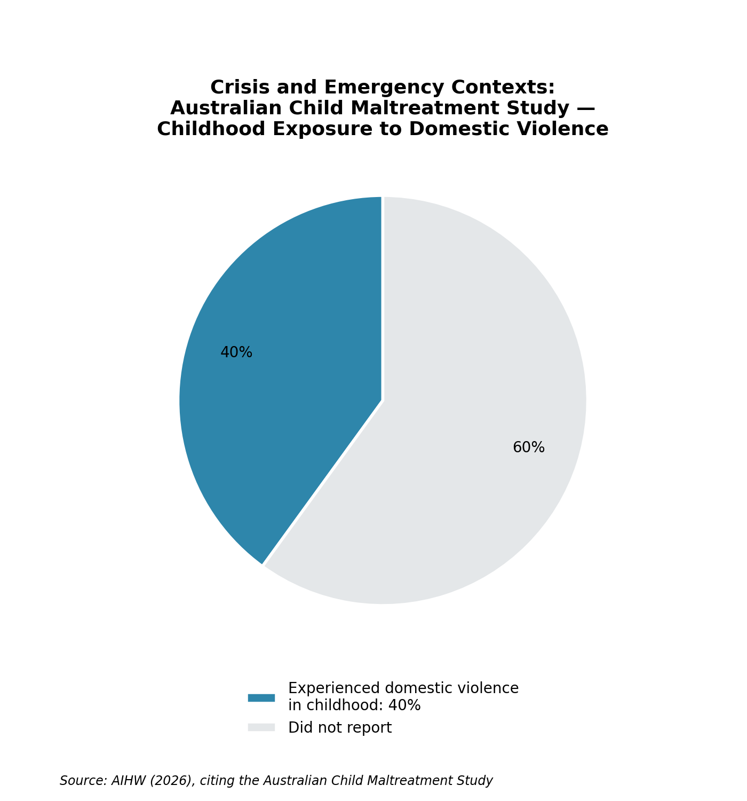
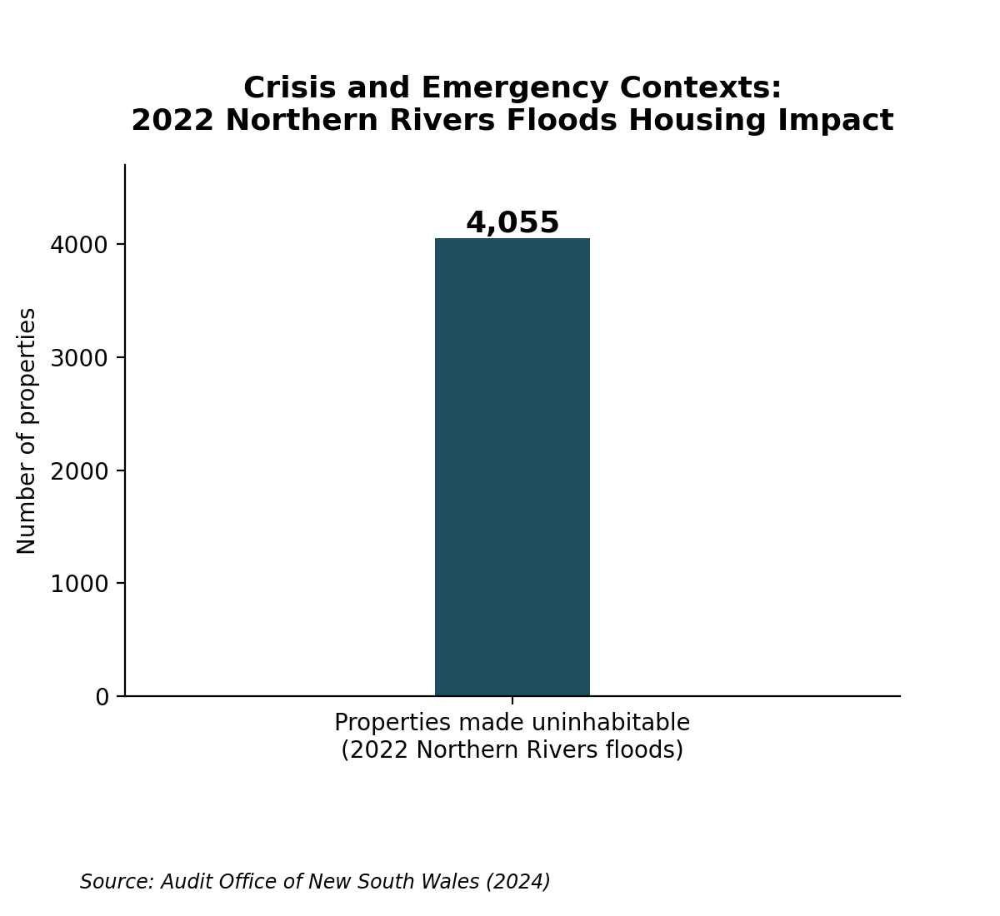

Crisis and Emergency Contexts
Climate-related natural disasters and domestic and family violence, and their implications for early childhood education and care.
Understanding the Context
The disasters relevant to this context include bushfires, floods, storms and heatwaves that impact communities. Domestic and family violence includes coercion and abuse – physical, psychological, sexual, financial or technology-facilitated – within family relationships. The two are not equivalent: disasters combine elements of environment and vulnerability with social factors, whereas domestic and family violence relates to the element of control.
Ecological Systems Theory shows how children relate to services, infrastructure, culture and policy whilst avoiding the implication of individualised blame (Bronfenbrenner, 1979). Rural families may encounter both distant emergency and domestic-violence services (Orr et al., 2022; Xu et al., 2023), as well as inaccessible means of evacuation if children or caregivers have disability. The ECEC cannot resolve danger but can provide continuity, observation and service connections (Cologon & Hayden, 2017).
Impact on Children and Families
The impacts of displacement, loss and uncertainty can affect sleep, attendance, concentration, regulation and play. DFV impacts relationships and participation in these processes – children are victim-survivors rather than passive witnesses. The effects are neither uniform nor inevitable – elements such as age, duration, safety, housing and resources, and cultural connection all play a role (Australian Institute of Health and Welfare [AIHW], 2025; Orr et al., 2022).
Caregiving, educators, routines, safe accommodation, voice and community connections are elements that may support recovery (AIHW, 2025; Orr et al., 2022). Services should not pathologise behaviour or demand disclosure; they require confidential records, contacts and processes for communication and reporting. Such approaches realise the EYLF V2.0 commitments to relationships, equity and family partnership (AGDE, 2022).
Social Policy and Australian Responses
The National Disaster Risk Reduction Framework includes much for prevention and shared responsibility – implementation remains essential (Australian Government Department of Home Affairs, 2018). The National Plan to End Violence against Women and Children 2022–2032 incorporates prevention within recovery elements yet cannot promise safe housing or support (Australian Government Department of Social Services, 2022).
The NSW Reconstruction Authority's (2024) plan delivers important elements towards evacuation and continuance but requires child-sensitive procedures. The NSW Department of Communities and Justice's (2022) DFV Plan gives strategic direction – for ECEC this implies lawful confidentiality and referral aspects depending upon available housing and specialists. The 2022 Northern Rivers floods saw 4,055 properties made uninhabitable (Audit Office of New South Wales, 2024). The Australian Child Maltreatment Study revealed that 40% of participants had experienced domestic violence in childhood – “exposure” must not erase victim-survivor status (AIHW, 2026).


Strategies for Practice
Maintain relational continuity
Stable relationships are an evidence-informed translation of both trauma research and EYLF guidance (AGDE, 2022; AIHW, 2025). Allocate a key educator and preserve routines, comfort items and contact during relocation.
Trust and participation
Use trauma-aware co-regulation
Stress can manifest within behaviour and play (AIHW, 2025; Orr et al., 2022). Offer calm spaces and sensory engagement, feelings language and voluntary fictional play which does not require disclosure.
Regulation and agency
Plan inclusive preparedness
An evidence-informed translation of climate research (Xu et al., 2023): adjust contacts, medications and authorised collectors – accessible visual evacuation plans, comfort kits and calm rehearsals can help.
Preparedness and confidence
Respond safely to DFV
Children require child-sensitive responses (Orr et al., 2022). Listen, provide reassurance and record exact words while avoiding investigation or mediation – apply the NSW Mandatory Reporter Guide procedures.
Safety and appropriate escalation
Coordinate recovery and referral
Crises span education, health and welfare systems (Cologon & Hayden, 2017). Make warm referrals and share necessary information with consent unless legally required otherwise.
Coordinated support
Community and Professional Partnerships
NSW SES
Provides warnings, preparedness and assistance; services use advice both before and during floods or storms.
Visit website →Australian Red Cross
Provides preparedness and recovery resources; collaborate in establishing recovery-sensitive routines.
Visit website →NSW Child and Family Health Services
Provides birth–5 support; with consent, refer for changes related to crisis impacting development or carer wellbeing.
Visit website →1800RESPECT
Offers 24-hour DFV counselling and referrals; educators may seek guidance or have private details available without pressuring for disclosure.
Visit website →NSW Domestic Violence Line
Gives 24/7 counselling, safety planning and crisis referrals for women and children. Use when specialist support is requested; ring 000 for immediate danger.
Visit website →Resources for Educators and Children
Projects, Programs or Websites
Emerging Minds. Educators/families: guide support before, during and after disaster – supporting trauma-aware responses.
Children's Health Queensland. Birth–6/adults: select appropriate activities for exploring emergencies – to support coping and hope.
Australian Red Cross. Educators: plan preparation and recovery learning for age-appropriate resilience without fear.
1800RESPECT. Adults: understand children as victim-survivors and strengthen non-blaming, safety-focused responses and referral.
Storybooks
Discuss fictional preparation, feelings, adult help and recovery – supporting understanding and resilience.
Explore evacuation and supportive relationships without eliciting disclosure.
 How Are You Feeling Today, Baby Bear?
How Are You Feeling Today, Baby Bear?Preview and use voluntarily to name feelings about a “stormy home” experience while developing empathy, without disclosure pressure.
 Some Secrets Should Never Be Kept
Some Secrets Should Never Be KeptDiscuss body autonomy and unsafe secrets with help-seeking, while emphasising adult responsibility.
Videos, Shows or Podcasts
View in sections – exploring shelters, supportive adults and coping during displacement.
Model breathing and movement to strengthen co-regulation during stressful periods.
Use this TV spot voluntarily to discuss body ownership and help-seeking; connection to DFV is indirect and lies within the care of adults.
Booked live or digital show using song and repetition to instil safety knowledge and help-seeking.
References
1800RESPECT. (n.d.). Children and violence. 1800respect.org.au/violence-and-abuse/children-and-young-people/children-and-violence/impacts
Audit Office of New South Wales. (2024). Flood housing response. www.audit.nsw.gov.au/our-work/reports/flood-housing-response
Australian Government Department of Education. (2022). Belonging, being and becoming: The Early Years Learning Framework for Australia (Version 2.0). www.acecqa.gov.au/sites/default/files/2023-01/EYLF-2022-V2.0.pdf
Australian Government Department of Home Affairs. (2018). National disaster risk reduction framework. www.nema.gov.au/sites/default/files/2024-08/national-disaster-risk-reduction-framework.pdf
Australian Government Department of Social Services. (2022). National plan to end violence against women and children 2022–2032. www.dss.gov.au/national-plan-end-gender-based-violence/resource/national-plan-end-violence-against-women-and-children-2022-2032
Australian Institute of Health and Welfare. (2025). Stress and trauma. www.aihw.gov.au/mental-health/topic-areas/health-wellbeing/stress-and-trauma
Australian Institute of Health and Welfare. (2026). Children and young people. www.aihw.gov.au/family-domestic-and-sexual-violence/population-groups/children-and-young-people
Australian Red Cross. (n.d.-a). Emergencies. www.redcross.org.au/emergencies/
Australian Red Cross. (n.d.-b). Resources for teachers. www.redcross.org.au/emergencies/resources/resources-for-teachers/
Bravehearts. (n.d.). Ditto's Keep Safe Adventure Show [Educational show]. bravehearts.org.au/education/dittos-keep-safe-adventure-program/dittos-keep-safe-adventure-show/
Bronfenbrenner, U. (1979). The ecology of human development: Experiments by nature and design. Harvard University Press.
Children's Health Queensland. (2021, January 11). Relaxing with Birdie [Video]. www.childrens.health.qld.gov.au/our-work/birdies-tree-natural-disaster-recovery/relaxing-with-birdie
Children's Health Queensland. (2023, March 6). Birdie and the shelter [Video]. www.childrens.health.qld.gov.au/resources/our-work/birdies-tree/birdie-and-the-shelter
Children's Health Queensland. (2025a, May). Birdie and the fire. www.childrens.health.qld.gov.au/our-work/birdies-tree-natural-disaster-recovery/birdies-tree-storybooks/birdie-and-the-fire
Children's Health Queensland. (2025b, May). Birdie and the flood. www.childrens.health.qld.gov.au/our-work/birdies-tree-natural-disaster-recovery/birdies-tree-storybooks/birdie-and-the-flood
Children's Health Queensland. (2025c, March). Birdie's Tree. www.childrens.health.qld.gov.au/our-work/birdies-tree-natural-disaster-recovery
Cologon, K., & Hayden, J. (2017). Children in fragile contexts: An international perspective on early childhood in emergency and disaster situations. In R. Grace, K. Hodge, & C. McMahon (Eds.), Children, families and communities (5th ed., pp. 337–357). Oxford University Press.
Council of Europe. (n.d.). Kiko and the Hand [TV spot]. www.coe.int/en/web/children/kiko-and-the-hand
Emerging Minds. (n.d.). Community Trauma Toolkit. emergingminds.com.au/resources/toolkits/community-trauma-toolkit/
Evans, J. (2014). How are you feeling today, Baby Bear? Exploring big feelings after living in a stormy home (L. Jackson, Illus.). Jessica Kingsley Publishers.
NSW Department of Communities and Justice. (2022). NSW domestic and family violence plan 2022–2027. dcj.nsw.gov.au/service-providers/supporting-family-domestic-sexual-violence-services/domestic-family-sexual-violence-plans-and-strategies/nsw-sexual-violence-plan-and-domestic-and-family-violence-plan.html
NSW Department of Communities and Justice. (2024). NSW Domestic Violence Line. dcj.nsw.gov.au/children-and-families/family-domestic-and-sexual-violence/domestic--family-and-sexual-violence-support-contacts/nsw-domestic-violence-line.html
NSW Health. (n.d.). Child and family health services. www.health.nsw.gov.au/child-family-health-services
NSW Reconstruction Authority. (2024). State disaster mitigation plan. www.nsw.gov.au/departments-and-agencies/nsw-reconstruction-authority/about-us/reducing-risk-adaptation-and-mitigation/disaster-adaptation-plans/guidelines/state-disaster-mitigation-plan
NSW State Emergency Service. (n.d.). NSW State Emergency Service. www.ses.nsw.gov.au/
Orr, C., Sims, S., Fisher, C., O'Donnell, M., Preen, D., Glauert, R., Milroy, H., & Garwood, S. (2022). Investigating the mental health of children exposed to domestic and family violence through the use of linked police data and health records (Research report 10/2022). Australia's National Research Organisation for Women's Safety. www.anrows.org.au/publication/investigating-the-mental-health-of-children-exposed-to-domestic-and-family-violence-through-the-use-of-linked-police-data-and-health-records/read/
Sanders, J. (2011). Some secrets should never be kept (C. Smith, Illus.). Upload Publishing.
Xu, R., Yu, P., Liu, Y., Chen, G., Yang, Z., Zhang, Y., Wu, Y., Beggs, P. J., Zhang, Y., Boocock, J., Ji, F., Hanigan, I., Jay, O., Bi, P., Vargas, N., Leder, K., Green, D., Quail, K., Huxley, R., … Guo, Y. (2023). Climate change, environmental extremes, and human health in Australia: Challenges, adaptation strategies, and policy gaps. The Lancet Regional Health – Western Pacific, 40, 100936. doi.org/10.1016/j.lanwpc.2023.100936